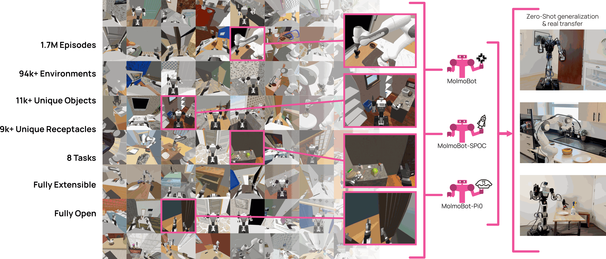
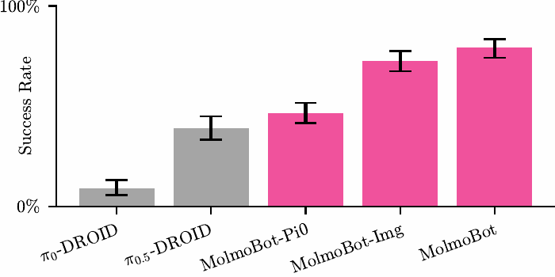
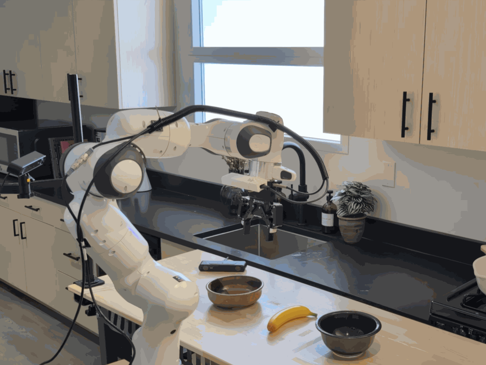
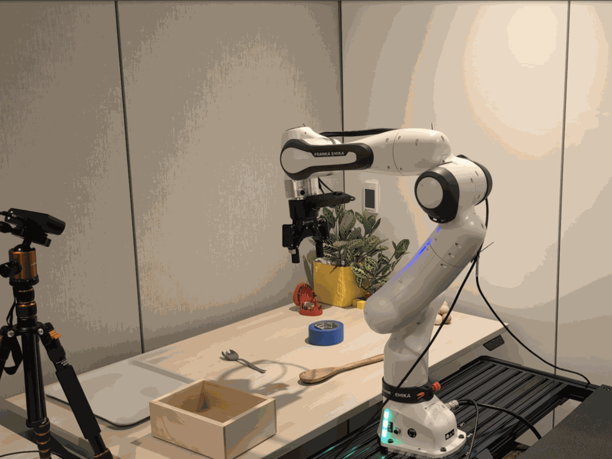
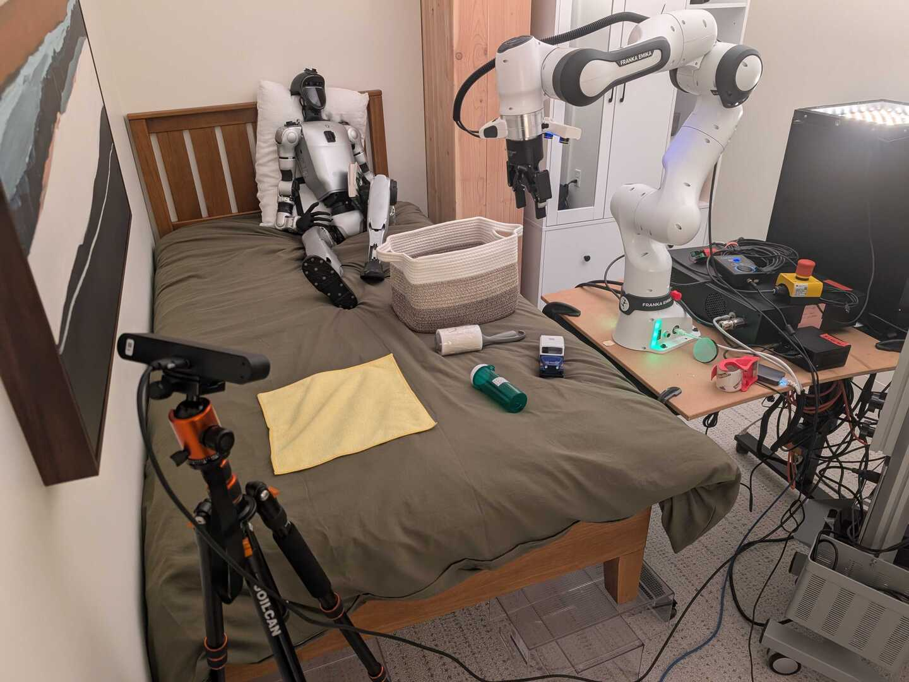
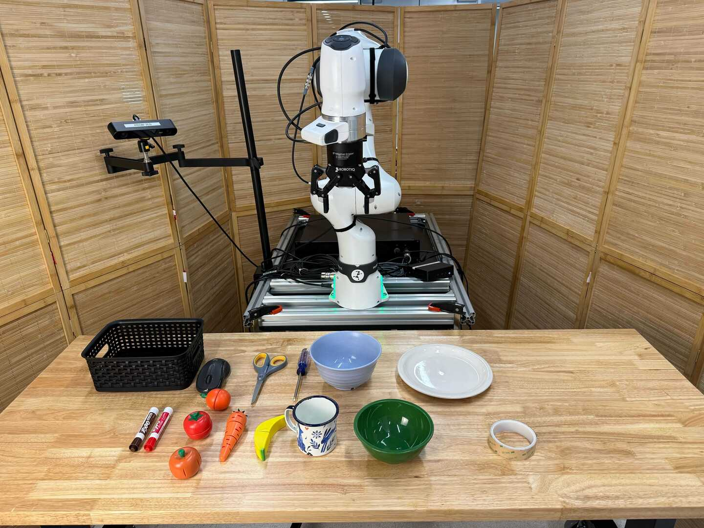
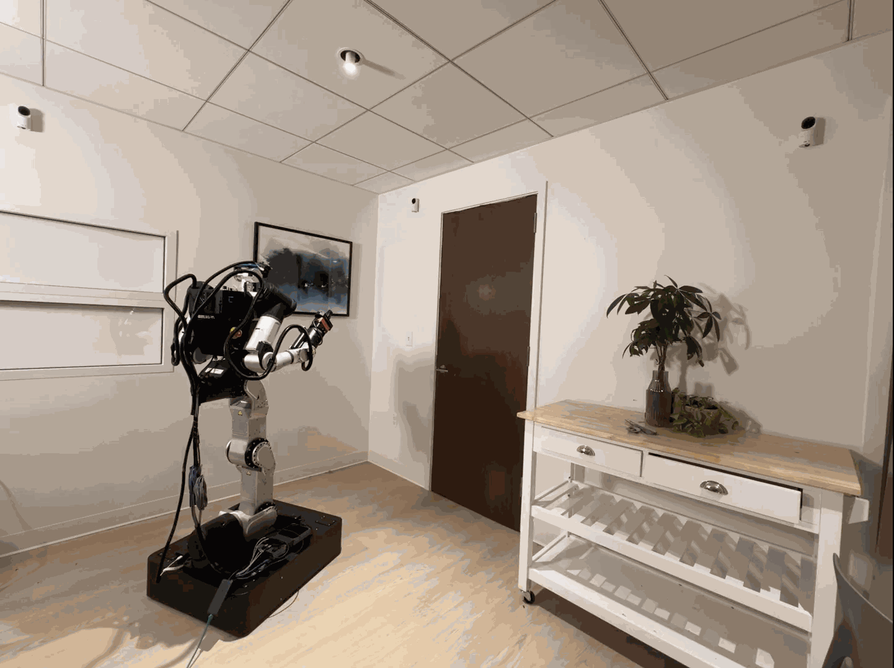
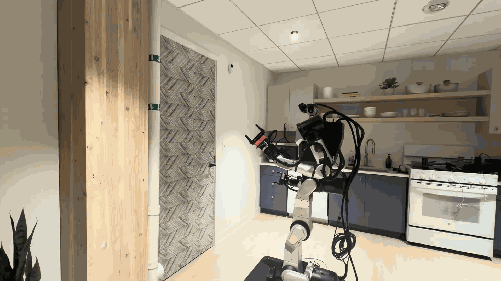
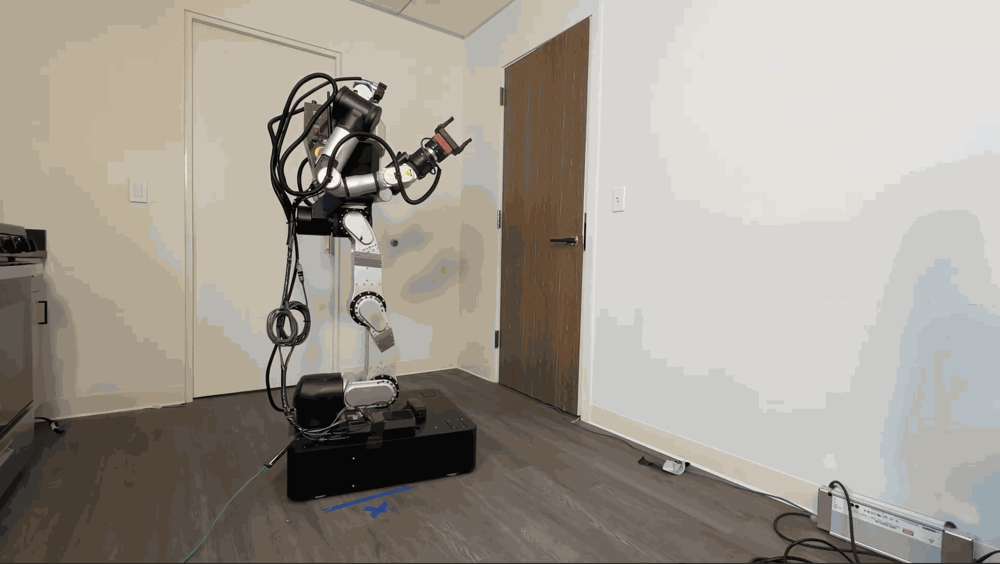
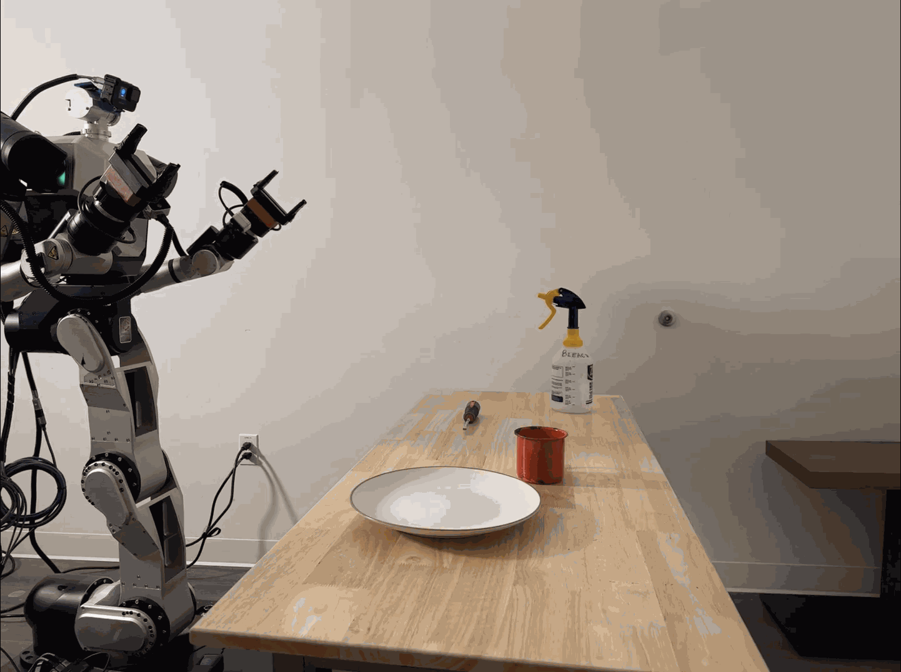

MolmoB0T: Large‑Scale Simulation
Enables Zero‑Shot Manipulation
A prevailing view in training generalist policies is that simulation alone is not enough; effective sim-to-real transfer is widely believed to require at least some real-world data collection or task-specific fine-tuning to bridge the gap between simulated and physical environments. In this paper, we challenge that assumption: with sufficiently large-scale and diverse synthetic training data, we show that zero-shot transfer to the real world is not only possible, but state-of-the-art for tabletop manipulation, with demonstrated extension to complex articulated and mobile manipulation tasks. We introduce MolmoBot-Engine, a fully open-source pipeline for procedural data generation across robots, tasks, and diverse simulated environments in MolmoSpaces. With it, we release MolmoBot-Data, a dataset of 1.7 million expert trajectories for articulated object manipulation and pick-and-place tasks. We train three policy classes: MolmoBot, a Molmo2-based multi-frame vision-language model with a flow-matching action head; MolmoBot-Pi0, which replicates the architecture to enable direct comparison; and MolmoBot-SPOC, a lightweight policy suitable for edge deployment and amenable to RL fine-tuning. We evaluate on two robotic platforms: the Franka FR3 for tabletop manipulation tasks and the Rainbow Robotics RB-Y1 mobile manipulator for door opening, drawer manipulation, cabinet interaction, and mobile pick-and-place. Without any real-world fine-tuning, our policies achieve zero-shot sim-to-real transfer with unseen objects and environments for tabletop and door-opening tasks. On tabletop pick-and-place, MolmoBot achieves a success rate of 79.2% in real world evaluations across 4 settings, outperforming at 39.2%. Our results demonstrate that procedural environment generation combined with diverse articulated assets can produce robust manipulation policies that generalize broadly to the real world. For videos and additional information, please see our project website.

1. Introduction#
Recent work in robotic manipulation (Black et al., 2024; Black et al., 2025; NVIDIA et al., 2025; Team et al., 2025) has made impressive progress towards robotics foundation models, producing robust manipulation policies increasingly capable of environment and task generalization. A key factor that drives these advances is large-scale real-world data sourced from expert tele-operation. These datasets are very expensive to collect, both in terms of money and human effort, and are therefore difficult to continue to scale. Generating synthetic data via simulation at scale could provide a salve to this issue, owing to its cheap scalability and high controllability, but widespread adoption is presently limited — current works largely only use synthetic data for narrow-domain training (Yin et al., 2026; Xue et al., 2025) or as a small portion of the pre-training mixture before additional post-training with real data (NVIDIA et al., 2025; Tian et al., 2025). This limited adoption is typically rooted in the domain gap in physical and visual realism of today’s physics-based simulation engines.
This domain gap is quite challenging to overcome, traditionally requiring either painstaking system identification (Memmel et al., 2024) or techniques such as iterative adaptation (Ren et al., 2023) or co-training (Maddukuri et al., 2025). In this paper, however, we find that this gap can be mitigated by leveraging massive scale and extreme diversity. We conclusively demonstrate that synthetic data generated via procedural simulation is not only sufficient for building zero-shot generalists, but also effective at training state-of-the-art generalists.
We introduce MolmoBot-Engine, a data generation pipeline with many robots, tasks, and diverse simulated environments, and MolmoBot-Data, a dataset of 1.7M demonstrations spanning articulated and rigid object manipulation across multiple robots. We train three policy classes: MolmoBot, our flagship VLA, MolmoBot-Pi0, a direct comparison to , and MolmoBot-SPOC, a lightweight policy for edge deployment. Evaluated on the Franka FR3 and Rainbow Robotics RB-Y1 without any real-world fine-tuning, our policies transfer zero-shot to unseen objects and environments. MolmoBot achieves 79.2% success on tabletop pick-and-place versus 39.2% for , and MolmoBot-Pi0 reaches 46.5% using the same architecture, demonstrating that the performance gap is driven by data. Our results suggest the barrier to general-purpose sim-to-real manipulation is less about an irreducible domain gap and more about access to sufficiently large, diverse, and open simulation pipelines; we provide that access by open-sourcing all components.
2. Related Work#
Imitation learning has emerged as a dominant paradigm for robot manipulation, with methods ranging from behavior cloning (Pomerleau, 2015; Zhang et al., 2017) to more sophisticated approaches incorporating temporal abstractions (Lynch et al., 2019) or diffusion models (Chi et al., 2023). RT-1 (Brohan et al., 2022) and RT-2 (Brohan et al., 2023) demonstrated that scaling model capacity and multi-task data produces capable manipulation policies, which has been extended by multiple policy families — including (Black et al., 2024; Black et al., 2025), GR00T (NVIDIA et al., 2025), and Gemini Robotics (Team et al., 2024; Team et al., 2025) — demonstrating that continuing to grow data scale and model capacity yields impressive returns on generalization and robot capabilities. Several initiatives have gathered extensive real-world demonstrations spanning diverse tasks and embodiments, enabling learning from heterogeneous trajectories (O’Neill et al., 2024; Khazatsky et al., 2024). This large-scale heterogeneous real-world data has also been used by recent works to explore cross-embodiment generalization (Zheng et al., 2025; Zha et al., 2026).
However, these real-world robot datasets are expensive to collect, so the field has increasingly emphasized alternate, cheaper data sources. These alternatives include handheld gripper devices (Chi et al., 2024; Etukuru et al., 2024), which still only scale linearly with human effort, and human videos (Singh et al., 2025; Xu et al., 2025; Bharadhwaj et al., 2023), which suffer from a domain gap between the human demonstrator and the robot. In contrast, simulation can scale easily and offers extreme controllability in comparison to the real world. Large-scale simulated data has powered generalist robot navigation policies (Team, 2025; Eftekhar et al., 2025; Ehsani et al., 2024), but manipulation policies trained on simulated data have either required task-specific post-training, as in InternVLA-M1 or InternData-A1 (Contributors, 2025; Tian et al., 2025), or remain limited to specific atomic tasks (Deng et al., 2025; Wang et al., 2025).
Our work extends this line of research by introducing MolmoBot-Engine, a fully open-source pipeline that enables scalable data generation in simulation across different robots, tasks, and diverse environments, and MolmoBot-Data, a large-scale generated dataset of expert manipulation trajectories. By combining procedural scene generation with diverse rigid and articulated assets, our dataset enables training generalist policies that transfer to real-world deployment without any real-world demonstrations or task-specific post-training.

3. MolmoBot-Engine: A Procedural Data Generation Pipeline#
We introduce MolmoBot-Engine, a scalable data generation pipeline for training robotic manipulation policies, illustrated in Fig. 2. Leveraging large-scale procedural generation, massive asset libraries, and domain randomization, we generate demonstration data at scale to make MolmoBot-Data, at a fraction of the cost of real-world collection. We present detailed statistics for this novel dataset in Tab. 3 and compare to prior large-scale datasets in Tab. 4 in the appendix.
3.1 Environments and Assets#
We leverage open-source objects and scenes from MolmoSpaces (Kim et al., 2026), a large collection of procedurally generated indoor environments with realistic and diverse room layouts, object placements, and rigid objects that can be programmatically added to any scene.
Environment setup. Each episode takes place in one of the more than 200k available pre-built MolmoSpaces scenes. The layout, furniture, and static objects remain fixed, and additional manipulable objects are inserted as required for task sampling.
Asset sourcing. Rigid objects for pick-and-place tasks are sourced from iTHOR (Kolve et al., 2017) and Objaverse (Deitke et al., 2022), and filtered for manipulability, which includes size and watertight meshes. Objects can be looked up via semantic relevance using the object metadata provided by MolmoSpaces.
Domain randomization. We extensively perform domain randomization across three axes: environment randomization, action randomization, and camera perturbation. Furthermore, during model training we also perform image augmentation.
For environment randomization, we randomize lighting (number of lights, positions, type, intensities, colors, and shadow parameters), textures (surface materials are randomized where supported with procedural textures and those sourced from AI2THOR assets (Kolve et al., 2017)), and dynamics (frictional and inertial properties, joint damping). We also randomize object configurations by sampling initial poses subject to collision and robot reachability constraints.
3.2 Setup: Robotic Platforms and Tasks#
We generate data for two robot platforms to enable tabletop and mobile manipulation.
Franka FR3. A 7-DoF Franka FR3 arm in the DROID (Khazatsky et al., 2024) configuration, mounted on a fixed base. Following DROID, data generation and evaluation are run at 15 Hz.
Rainbow RB-Y1. A mobile bimanual manipulator with a holonomic base and actuated 6-DoF torso and 2-DoF head. Each arm is 7-DoF and equipped with a parallel-jaw gripper.
For each episode, we sample initial robot joint positions around the robot-specific nominal home configuration. Additionally, during the episode, the demonstrator’s outputted actions are perturbed via proportional action noise injection to ensure state coverage. Further details on joint randomization and action noise injection are provided in App. A.1. Robot cameras are also randomized in both intrinsics and extrinsics, detailed in App. A.2.
We define four rigid-body and two articulated-object manipulation tasks. We evaluate rigid-body tasks on both platforms: Pick, Pick-and-place-into, Pick-and-place-next-to, and Pick-and-place-color. We evaluate the articulated-object tasks on the RB-Y1: Open and Open-door. Please see App. A.3 for task setup details.
3.3 Expert Task and Motion Planners#
For each task, we generate expert demonstrations at scale via scripted motion planners that iteratively sample grasps, verify feasibility, and execute motion for each task phase. Expert demonstrators for the Franka FR3 use IK-based interpolation, and for RB-Y1 use the CuRobo (Sundaralingam et al., 2023) motion generator to coordinate the many degrees of freedom with collision-aware motion planning. Pregenerated grasps from MolmoSpaces-Grasp (Kim et al., 2026) are used to cheaply sample stable grasps during data generation. Finally, programmed retry behavior provides recovery data, serving to robustify learned policies. Complete details are provided in App. A.4.
4. Training MolmoBot Policies on Simulated Data#
We train three policy classes on MolmoBot-Data, enabling comparison across different architectures and model capacities: MolmoBot, MolmoBot-Pi0, and MolmoBot-SPOC.
![Figure 3: Left: MolmoBot policies ingest camera views, proprioception, the task instruction, and optional 2D points, represented as a grounding image and 2D coordinates in that image. Top right: MolmoBot, our flagship VLA, uses a Molmo2-4B vision-language backbone and a DiT-based flow matching action head to predict action chunks. Bottom right: MolmoBot-SPOC is a lightweight transformer-based policy, using a transformer decoder to predict an action chunk, conditioned on frozen vision and text embeddings. MolmoBot-Pi0 (not shown) exactly follows the π0 (Black et al., 2024) architecture, initialized from PaliGemma (Beyer et al., 2024) weights and a randomly initialized action expert.](img/figures/MolomoSpoc_MolmoFlow_debranded.png)
4.1 MolmoBot: Our Flagship VLA#
MolmoBot is our flagship policy, which leverages Molmo2-4B (Clark et al., 2026), a vision-language model pre-trained on large-scale image-text data. The VLM encodes vision-language observations, which is fed into the flow matching action head along with proprioceptive state, as visualized in Fig. 3.
VLM Backbone. MolmoBot uses Molmo2-4B as a backbone. Molmo2-4B is pre-trained with both multi-image and video input, making it well-suited to ingesting not only multiple camera inputs, but also multiple observations over time. Exploiting this functionality, we train MolmoBot to ingest up to 2 frames of history, in addition to the current observation. To preserve visual pre-training and avoid overfitting to simulation artifacts, we freeze the SigLIP vision encoder for training.
Action Head. The action head is a DiT (Peebles and Xie, 2023) with the same number of layers as the VLM backbone, where each layer cross-attends to the corresponding VLM backbone layer’s features. Proprioceptive state is fed to the action head by projecting to the feature space and appending to the VLM feature sequence, while the continuous timestep embedding modulates the features, following (Black et al., 2024). For our experiments, we predict chunks of 16 actions and execute 8 before rerunning inference, following (Zhao et al., 2023).
Data Sampling. To induce recovery behavior, the demonstration data includes failures and subsequent retries. To avoid learning suboptimal behavior, we sample frames non-uniformly: retries are up-weighted by , successful grasps by , and task completion behavior by .
Multi-Timestep Supervision. The action head has a much lighter compute footprint than the LLM backbone. We leverage this during training by sampling multiple flow matching timesteps to supervise in parallel per data sample, leading to faster convergence. We supervise 8 parallel flow matching timesteps per data sample unless otherwise stated, which we ablate in Sec. C.7.
Training with History. We train variants of our MolmoBot with varying amounts of history timeframes. Our single-frame policy is MolmoBot-Img, which we train with a batch size of 1024 for 200k steps for static manipulation and 100k for mobile manipulation. Leveraging Molmo2’s video pre-training, we also train multi-frame models: MolmoBot (H=1) and MolmoBot (H=2), which respectively ingest 1 and 2 past observations (in addition to the current). The past observations fed into the model are from steps ago, with (s) in our experiments. To train multiframe models, we start from MolmoBot-Img and train the model for 50k additional steps with multiframe observations, keeping all other training parameters unchanged. Being our flagship model, we also refer to MolmoBot (H=1) as MolmoBot.
4.2 MolmoBot-SPOC: A Lightweight Transformer Policy#
MolmoBot-SPOC, pictured in Fig. 3, is a transformer-based architecture adapted from Ehsani et al. (2024). With 108M trainable parameters, it is our smallest policy class, and the most amenable to lightweight inference on the edge. Using a transformer decoder, learned action query embeddings cross-attend to encoded observations and task conditioning to produce an action chunk.
Visual, Language, and Proprioceptive Encoding. Visual observations are encoded using SigLIP2 (Tschannen et al., 2025), retaining the full sequence of patch tokens. Language task instructions are similarly encoded with the SigLIP text encoder (Zhai et al., 2023). These token sequences are concatenated with proprioceptive state, which is projected to the token space, and used as input to the policy.
Point Goal Conditioning. For tasks that provide spatial goal specification, MolmoBot-SPOC optionally incorporates point-based goal conditioning. 1-2 normalized pixel coordinates are provided depending on the task (2 for PnP, 1 for all else), which are encoded with sinusoidal positional encoding and then projected into the token space. A learned coordinate position embedding is added to each encoded point, and the resulting tokens are concatenated with the other inputs.
Action Representation. To enable fast and efficient inference, MolmoBot-SPOC uses a discrete action space. Continuous action values are clipped to the 1st and 99th percentiles, and then discretized using quantile binning with 256 bins, which yields approximately equally populated bins. The action decoder predicts a categorical distribution over the 256 bins independently for each action dimension at every timestep in the chunk, and is supervised with a standard cross-entropy loss.
Parallel Action Decoding. Following Zhao et al. (2023), MolmoBot-SPOC uses a bidirectional parallel decoder. Given learned action query embeddings, the decoder predicts action tokens, where is the action dimension and is the chunk length. Temporal structure is encoded using sinusoidal positional embeddings applied over a flattened sequence of positions.
4.3 MolmoBot-Pi0: A Systematic Ablation#
To isolate the effect of MolmoBot-Data on real-world VLA performance, we train MolmoBot-Pi0, a VLA with architecture identical to (Black et al., 2024) but trained entirely on our synthetically generated data. This enables head-to-head comparisons with existing SOTA VLAs, controlling for modeling or architecture changes.
Architecture. Following (Black et al., 2024), MolmoBot-Pi0 uses the Paligemma 3B VLM with a flow-matching action expert. We use the openpi (Physical Intelligence, 2025) codebase for all MolmoBot-Pi0 modeling code, ensuring equivalence with .
Training Protocol. We train for 200k steps at a batch size of 1024 with a learning rate of , using a 1k step warmup. All other training parameters (flow matching timestep sampling, other optimizer hyperparameters, etc.) are left as the default values. As with MolmoBot, we freeze the vision encoder during training.
5. Experiments#
To illustrate the performance and generality of MolmoBot policies and the MolmoBot-Engine, we train and evaluate on multiple tasks in various real-world and simulated settings. Crucially, all models are only trained on sim, with zero task-specific or real-world post-training or fine-tuning. All MolmoBot policies have never seen any real-robot data.
| Model | Pick v1 | Pick v2 | Pick v2 (F) | Pick v2 RC (F) | PnP Into (F) | PnP Next-To (F) | PnP Color | Avg. | |
|---|---|---|---|---|---|---|---|---|---|
| (Black et al., 2025) | 18.12.4 | 6.41.5 | 7.01.6 | 8.01.9 | 11.72.1/7.61.7 | 8.22.2/6.21.9 | 10.41.9/6.71.6 | 10.0 | |
| -Finetune | 48.03.1 | 28.32.8 | 25.82.7 | 29.72.9 | 43.56.0/37.45.8 | 3.2/14.72.5 | 48.33.1/38.93.0 | 36.0 | |
| StereoVLA (Deng et al., 2025) | 6.62.6 | 4.31.5 | 1.11.0 | N/A | 0 | N/A | 0 | 1.7 | |
| LAP-VLA (Zha et al., 2026) | 19.42.4 | 2.41.0 | 3.11.1 | 2.71.0 | 3.811.5/1.591.0 | 6.482.8/3.412.1 | 3.11.1/1.50.8 | 4.8 | |
| X-VLA (Zheng et al., 2025) | 3.31.0 | 0.50.5 | 0.70.5 | 0.80.5 | 0.10.2/0.10.2 | 1.90.9/1.00.7 | 0.90.6/0.50.5 | 1.2 | |
| MolmoBot-Pi0 | 66.22.9 | 35.73.0 | 33.32.9 | 39.83.1 | 44.73.1/38.23.1 | 24.73.2/13.32.5 | 46.23.1/40.03.1 | 41.5 | |
| MolmoBot-Img | 92.21.7 | 63.53.0 | 61.43.0 | 62.13.0 | 63.03.0/55.03.1 | 21.02.5/16.42.3 | 2.9/3.0 | 61.6 | |
| MolmoBot (H=1) | 1.5 | 2.9 | 3.0 | 3.0 | 2.9/3.0 | 26.42.7/20.22.5 | 2.9/60.03.0 | ||
| MolmoBot (H=2) | 91.31.8 | 63.83.0 | 59.03.0 | 62.73.0 | 65.42.9/55.63.1 | 28.32.8/2.6 | 66.12.9/57.33.1 | 62.4 |
5.1 Zero-Shot Real-World Transfer#
For our DROID evaluations, we compare against (Black et al., 2024) and (Black et al., 2025), which are SOTA open-weights manipulation policies for the DROID platform. Both are trained with >10k hours of real-world data and fine-tuned on the DROID dataset, and further adds innovations to greatly boost generality. The RB-Y1 enjoys less community adoption than DROID, and to our knowledge there are no available generalist policies to compare against. We therefore reserve quantitative comparisons for our DROID evaluations.
5.1.1 Static Manipulation Evaluation#
Setup. We evaluate all Franka policies on pick-and-place tasks in four real-world environments across two institutions, totaling 120 trials per policy. Evaluation environments are pictured in Fig. 6, and further details are provided in App. C.1.

Results In our real-world static manipulation evaluations, MolmoBot policies exhibit strong zero-shot sim2real transfer, as illustrated in Fig. 4. MolmoBot and MolmoBot-Img significantly outperform while MolmoBot-Pi0 is competitive, all without the benefit of ’s architectural improvements. Additionally, all MolmoBot policies perform much better than . Despite having identical architectures, MolmoBot-Pi0 significantly outperforms in our evaluations, highlighting the value of MolmoBot-Data. We further study the dynamics of how this data affects policy behavior in Sec. 5.3.
5.1.2 Mobile Manipulation Evaluation#
Setup. We evaluate a MolmoBot Door Specialist on a door opening task in three real-world environments, each featuring a distinct pull door with varying textures and handle configurations. Pulling a door open requires precise grasping behavior and coordinated motion to avoid collision.
Results. Full evaluation results are presented in Tab. 9. The robot successfully grasped the door handle in 4 of 9 trials, and in 2 of which successfully opened the door. We note that these evaluations were hampered by hardware faults during rollout. Please see App. C.2 for further discussion.
5.2 Simulation Evaluation#
For further reduced evaluation uncertainty, we turn to systematic simulation evaluation.
5.2.1 Static Manipulation#
Setup. We evaluate on held-out procedural houses with held-out asset instances, following MolmoSpaces (Kim et al., 2026). We evaluate each task on these houses and report oracle success rate (task completion at any timestep) for all tasks, and additionally success-at-end (task completion at final timestep) for pick-and-place tasks, which captures a policy’s tendency to undo task success. To push evaluation settings further OOD from MolmoBot-Data, we evaluate some tasks with the Filament renderer, indicated with (F). Full simulation evaluation details are in App. C.3.
Tasks. We evaluate increasingly difficult tasks on 1000 episode benchmarks, detailed in Tab. 1. We evaluate picking tasks with a time budget of 20s under various levels of complexity, which push the evaluations further OOD. This includes Pick v1, which is limited to a select few MSProc object classes, and Pick v2, which uses a diverse set of objects sampled from Objaverse. We additionally evaluate with randomly placed exocentric cameras. For pick-and-place tasks, we evaluate with a time budget of 40s. Further details on task details and success criteria are described in App. C.3.
Baselines. We compare against existing VLAs: (Black et al., 2025) is evaluated both zero-shot and after fine-tuning on MolmoBot-Data for 15k steps to adapt it to simulation. We also evaluate StereoVLA (Deng et al., 2025), LAP-VLA (Zha et al., 2026), and X-VLA (Zheng et al., 2025) zero-shot. We note that StereoVLA requires a specific exocentric camera placement and is only trained to place into receptacles, and therefore cannot be evaluated on Pick v2 RC or PnP Next-To. This is indicated with “N/A” and is treated as a 0.
Results. MolmoBot policies outperform all baselines across all tasks. and are the strongest baselines, averaging 10% and 36% success respectively, with the latter ameliorated by fine-tuning on MolmoBot-Data. Other VLA baselines (StereoVLA, LAP-VLA, and X-VLA) generally perform poorly in our evaluations, with average success rates of less than 5%. MolmoBot policies, on the other hand, do far better: MolmoBot-Pi0 averages 41.5% success while Molmo2-based policies achieve 61%–64%. MolmoBot (H=1) performs the best, achieving an average success rate of 64.1%. Further discussion and additional results are presented in App. C.3.
5.2.2 Mobile Manipulation#
Setup. We evaluate different variants of MolmoBot policies on rigid and articulated object manipulation tasks: Pick, PnP Into, Open, and Open-door. Specifically, we train and evaluate MB Multitask, trained on all tasks; MB Door, a specialist trained only on door opening; MB-SPOC Rigid, trained only Pick and PnP Into; and MB-SPOC Artic., trained only on Open and Open-door. We note that these tasks do not share the same specific environments or starting configurations as those in Sec. 5.2.1.
| Model | Pick | PnP Into | Open | Open (Door) |
|---|---|---|---|---|
| MB Multitask | 44.8 | 22.5 | 25.2 | 70.2 |
| MB Door | – | – | – | 77.7 |
| MB-SPOC Rigid | 10.5 | 1.8 | – | – |
| MB-SPOC Artic. | – | – | 21.8 | 58.8 |
Results. As illustrated in Tab. 2, MolmoBot policies perform well on a variety of tasks. Evidently, MolmoBot-Engine can generate data for complex high-DOF mobile robots that produce powerful policies. Please refer to App. C.4 for further discussion.
5.3 Data Ablations#
We now proceed to study the various axes of scale and diversity provided by MolmoBot-Data, and how they influence downstream performance.
Setup. All results we report in this section are with the MolmoBot-Img model architecture, trained only for the pick task with various datasets. Simulation evaluations are on Pick v2, while real-world evaluations are on the pick task, performed with the DROID platform in the workroom environment (Fig. 6) on 6 objects with 5 trials per object. We note that each data point in our ablations is derived from a purpose-built dataset of up to 50k trajectories, which is exactly the type of thorough analysis at scale which MolmoBot-Engine aims to enable. Please refer to App. C.6 for full experimental details.

Scaling Number of Demonstrations. To study how performance changes with the data scale, we vary the total number of demonstrations while keeping the number of environments and object classes fixed. Concretely, we train on 10k, 25k, and 50k demonstrations sampled from the same set of 5k environments and 12.4k object categories. We observe predictable scaling trends as pick performance improves with the number of demonstrations (Figure 5 (a)).
Scaling Object Class Diversity. Here, we train with a fixed number of 50k trajectories while sampling from 10 to 100 object classes (Fig. 5 (b)). We find that performance improves as expected in simulation, but the performance in real quickly saturates with respect to object class diversity. We hypothesize that the geometric diversity provided by the many object instances within a small number of classes is sufficient for picking, which does not require much semantic reasoning. We note that the policy still performs relatively equally on seen and unseen object classes, implying that the VLM backbone might be responsible for semantic generalization without necessarily requiring robot data.
Scaling Environment Diversity. Finally, we vary the number of unique environments in the training set while keeping the total number of demonstrations fixed at 50k. Unexpectedly, we find that increasing the number of unique training environments has little effect on downstream performance (Fig. 5 (c)). This suggests that geometric and interaction diversity dominate the visual diversity provided by scaling environments. This could be magnified by the strong pretrained visual representations, which might obviate the benefit from added visual diversity. We note that each environment has multiple rooms, which induces substantially more visually distinct workspaces/backgrounds than the number of environments. Extending Fig. 5 (c) further to the left may be required to more conclusively establish performance trends with respect to environment diversity.
6. Conclusion#
In this work, we demonstrate that zero-shot transfer of generalist manipulation behaviors from simulation to the real world is not only possible, but state-of-the-art for static manipulation, with demonstrated extension to articulated and mobile manipulation tasks. We introduce MolmoBot-Engine and use it to generate MolmoBot-Data, which we use to train a family of generalist policies. Without any real-world fine-tuning, our policies demonstrate zero-shot sim-to-real transfer: MolmoBot achieves a success rate of 79.2% in our real-world static manipulation evaluations, more than double that of the strongest baseline, , demonstrating broad generalization capability. We release all models, data, and code to enable the community to extend this approach.
Limitations and Future Work: MolmoBot represents a promising step for scaling up simulation data, but there remain several open challenges. MolmoBot-Engine is constrained to assets and tasks that can be accurately simulated, limiting our focus to rigid body and articulated object manipulation. Extending to contact-rich manipulation or deformable objects poses new difficulties, which may be ameliorated by future advances in physics-based or generative simulators. Additionally, no suitable baselines are currently available for our RB-Y1 evaluations, making them difficult to contextualize within the broader literature. Furthermore, while MolmoBot demonstrates the viability of simulation-only training, reliable deployment in the real world may require data from the target environment, on-policy failures and interventions, and more. Rather than supplanting every aspect of real-world data collection, we hope that MolmoBot-Engine serves as a source of high-quality and easy-to-simulate interactions, which can be procedurally scaled up. This would massively reduce the reliance on real-world data collection, which can instead focus on behaviors for which scripted demonstrators are intractable, or tasks which are difficult to simulate. We are excited to see how future work can leverage MolmoBot-Engine and MolmoBot-Data to build increasingly robust generalists.
Acknowledgments#
This work would not be possible without the support of our colleagues at Ai2:
- We thank Christopher Clark and Tanmay Gupta for helpful research discussions and sharing of relevant findings across related projects.
- We thank David Albright, Crystal Nam, Kristin Cha, Sophie Lebrecht, Taira Anderson, Kyle Wiggers, Kelsey MacMillan, Katie Morigi, and Megan Bartot for project management, support to robot room, and publicity of MolmoBot.
- We thank Sam Skjonsberg, Tucker Wilde, Johann Dahm, Fangzhou Hu, and Caroline Wu for their work on the Ai2 cluster.
A. Data Generation#
A.1 Robot Randomization#
Initial joint-configuration randomization. At episode initialization, each move group’s joint positions are sampled as , where is a nominal home configuration and with per-joint noise magnitudes . For both robots, the arm noise magnitudes are graduated: proximal joints receive smaller perturbations and distal joints larger ones. Concretely, the Franka arm uses rad (chosen via a Jacobian-weighted heuristic to bound TCP displacement to 10 cm), and each RB-Y1 arm uses rad. The RB-Y1 additionally randomizes head pan and tilt ( rad each) and gripper aperture ( rad). Torso and base initial joint positions are not perturbed.
Action noise injection. During data collection, noise is injected into expert actions to prevent policies from overfitting to exact action replay. The noise is action-proportional: its standard deviation scales with the magnitude of the commanded displacement, so stationary commands receive no noise and large motions receive proportionally more.
For arm move groups, noise is applied in TCP space and then mapped back to joint space via the Jacobian pseudo-inverse. Specifically, we compute the commanded TCP displacement from the Jacobian and the joint-space command . Position noise is sampled from a truncated Gaussian with and clipped to cm, where is a scale factor. Rotation noise uses , clipped to rad (). The resulting 6-DoF TCP noise vector is projected to joint space by solving in the least-squares sense, and the noisy command is clipped to joint limits.
For the RB-Y1 base, planar noise is applied directly to commands using clipped Gaussians with , bounded to cm in position and rad () in heading. Action noise is disabled during simulated evaluation.
Gripper handling.
Gripper close and open commands execute over fixed durations of 0.5s and 0.25s, respectively, followed by a settle period (move_settle_time s for the Franka; up to max_grasping_timesteps control steps for the RB-Y1) during which the arm is held stationary. This simulates real-world grasp settling time and ensures the object is stably grasped before subsequent arm motion resumes.
A.2 Sensor Configuration#
After placing objects and applying domain randomization, we configure the robot’s sensors for the episode. We describe the camera systems for each platform, followed by additional sensor modalities.
A.2.1 FR3 camera system#
We generate data for five camera viewpoints for the Franka FR3, to provide diverse viewpoints for tabletop manipulation. In this work, we only train with the wrist camera and one randomized exocentric camera; the rest are present in MolmoBot-Data to provide for future work.
Wrist camera. A gripper-mounted camera analogous to a ZED Mini, with 52° vertical FOV (4° noise). Position is perturbed by 1.5cm lateral, 0.5cm vertical, and 2cm in depth; orientation by 8° in roll and 4° in pitch and yaw.
Fixed shoulder camera. A robot-mounted exocentric camera positioned at a fixed offset from the robot base, with 71° FOV and light randomization (5cm position, 8° orientation). Placement is constrained to maintain visibility of task objects.
Randomized exocentric cameras. Three freely-placed cameras sample positions around the workspace center: two ZED2 analogues (64–72° FOV) and one GoPro analogue (137–140° FOV raw, then warped and cropped). For each camera, we sample distance (0.2–0.8m for ZED2, 0.2–0.5m for GoPro), height (0.05–0.6m above workspace), and azimuth (full 360°). Lookat target is the workspace center with 10cm noise. Placement is rejected and resampled (up to 20 attempts) if task objects and gripper are not visible.
All FR3 cameras render at , chosen to be close to the real-world resolution of while keeping both dimensions a multiple of 16 for video encoding.
A.2.2 RB-Y1 camera system#
The RB-Y1 uses three cameras matching the real robot’s sensor configuration, all of which are used for training in this work:
Head camera. A head-mounted camera analogous to a GoPro in wide mode, rendered at 1024576 and cropped to 768576 (4:3 aspect ratio) in post-processing. We use a vertical FOV of 139° with 3° noise. Position is perturbed by 1cm in each axis, orientation by 4° around each axis, and randomized fisheye warping is applied per-frame during training.
Wrist cameras. Left and right wrist-mounted cameras analogous to Intel RealSense D405 sensors. These render at 1024576 (16:9 aspect ratio) with 58° vertical FOV and 4° FOV noise. Position noise is 1.5cm lateral, 0.5cm vertical, and 1cm in depth; orientation noise is 8° in roll and 4° in pitch and yaw. Depth is recorded for the benefit of future dataset utility but unused during training.
A.2.3 Proprioception and additional sensors#
Beyond visual observations, we record proprioceptive state and auxiliary information for analysis and potential future use:
Robot state. We record the joint positions and velocities, TCP poses for each gripper, and the robot base pose.
Action labels. We record actions in multiple representations: commanded joint positions (absolute and relative to current joint positions), end-effector twist relative to current pose, and absolute end-effector pose. This enables training with different action parameterizations from the same trajectories.
Task state. We record the object start and goal poses, grasp state indicators, policy phase, and retry counts from the expert policy.
Camera parameters. We record the intrinsic and extrinsic parameters for each camera, enabling projection between 2D and 3D coordinates and potential depth-based augmentation. We also record points in the image frame on objects of interest in all cameras.
Depth images are recorded for RGB-D camera analogues but were not used in any of the training runs reported in this work.
A.3 Tasks#
Below we detail specific task descriptions and success criteria for each task we generate data for and evaluate on.
A.3.1 Rigid object manipulation#
- Pick: Grasp a target object and lift it above its starting height. Success requires that the object is no longer supported by any non-robot surface and has been raised by at least 1 cm.
- Pick-and-place-into: Put a target object into a specified receptacle. The task succeeds when at least 50% of the object’s weight is supported by the receptacle, and the receptacle has not been displaced by more than 10 cm or rotated by more than 45∘.
- Pick-and-place-next-to: Place a target object adjacent to a reference object on the same surface. Success requires the surface-to-surface distance in the XY plane to lie within cm and the reference object to remain within 15 cm of its initial position.
- Pick-and-place-color: Place an object into a receptacle identified by color (e.g., “place on the red plate”). Two receptacles identical (except for color) are placed in the scene; success criteria match pick-and-place.
A.3.2 Articulated object manipulation#
- Open: Open a nearby articulated object (e.g., cabinet, drawer, oven, dishwasher) to at least 67% of its joint range.
- Open-door: Open a nearby hinged door to at least 67% of its hinge joint range. The instruction is conditioned on the robot’s starting pose relative to the door, yielding either “push the door open” or “pull the door open.”
A.4 Expert Demonstrations#
Grasp sampling and filtering. Rather than assuming a fixed grasp pose, we load a large set of pre-computed grasp candidates per object from MolmoSpaces’ grasp dataset and progressively filter them:
- Candidate loading and ranking: We load pre-computed 6-DoF grasps for each object, transform them into the world frame (including flipped variants), and rank them by a weighted cost that combines TCP proximity, rotation similarity, vertical alignment, and distance to the object center of mass.
- Collision filtering: The top-ranked candidates are tested for gripper–scene collision by placing phantom collision bodies at each candidate pose in MuJoCo and running broadphase collision detection in batches of up to 128.
- IK feasibility: Non-colliding candidates are checked for kinematic reachability via batch inverse kinematics (batches of up to 256). The highest-ranked feasible grasp is selected.
Phase-based trajectory generation. Each task is decomposed into a fixed sequence of phases, with motion planned independently per phase.
For pick-and-place tasks, the phases are: Pregrasp Grasp Lift Preplace Place Postplace Stow. For the RB-Y1 demonstrator, the Preplace and Place phases are combined, and we omit the additional Stow phase. In other words, the policy will first move to a pregrasp pose offset along the grasp approach axis, move to the grasp pose and close the gripper, lift the object, move to a pose above the receptacle before lowering to the placement pose and opening the gripper, and finally moving back to the home position.
Pick-and-place-next-to and pick-and-place-color are the same as pick-and-place, differing only in placement pose.
Pick tasks proceed similarly to pick-and-place, but terminate after the Lift phase.
For the open and open-door tasks, the phases are: Pregrasp Grasp Articulate Postarticulate. After grasping the handle, articulation-specific end-effector waypoints are computed: a circular arc about the hinge axis for revolute joints (doors), or a linear path along the slide axis for prismatic joints (drawers). The planner solves for each waypoint sequentially using IK or trajectory optimization.
Retry behavior Each demonstrator is equipped with retry behavior. While executing a task, if the demonstrator detects a mistake (the object fell out of the grasp, the robot failed to acquire the grasp, etc.) it will reset to the first phase of the trajectory and try again. If more than 3 retries are triggered in an episode, it is terminated and discarded. This explicit retry behavior imbues policies with the ability to handle and recover from mistakes or disturbances.
Motion planning for RB-Y1 with CuRobo. For the RB-Y1, we use CuRobo (Sundaralingam et al., 2023) for GPU-accelerated collision-aware trajectory optimization. We model the whole-body kinematics as a 23-DOF chain: a 3-DOF holonomic base (two virtual prismatic joints for planar translation and one continuous joint for yaw), a 6-DOF torso, and two 7-DOF arms. Given a target end-effector pose, CuRobo first solves inverse kinematics using 64 seeds, then computes a collision-free trajectory using 4 trajectory optimization seeds, and finally smooths and interpolates the result to match the simulation control frequency. The robot geometry is approximated by collision spheres, while scene obstacles use mesh-based collision checking with a 0.2m activation distance and self-collision optimization enabled. For phases requiring collision-free motion (e.g., pre-grasp approach, placement), multiple candidate goal poses are evaluated in parallel (default batch size of 4, up to 4 batches), and the trajectory with the least total joint displacement is selected. When a waypoint cannot be reached within a fixed number of control steps, the planner re-plans from the current configuration, up to a maximum of 5 re-planning attempts per phase.
A.5 Referral Expressions#
In order to sample referral expressions, we first consider task contexts. For example, in a task where the robot is in front of a workbench with some objects on top of it, the context should be the set of objects lying on the workbench surface. In that context, we seek to maximize the contrast between (1) the CLIP similarity between the normalized textual embedding of the referral expression and the normalized visual embedding of the target object, and (2) the CLIP similarity between the referral expression and any of the other objects on the workbench surface. In other words, we do not take into account whether the referral expression would be a better fit for any other object in the scene, as it is the robot’s task to infer the correct context given the task setup and the instruction.
The set of possible referral expressions is composed of LLM-generated short descriptions (between 1 and 5 words), synset lemmas, and normalized object category names. We filter valid expressions that produce a CLIP-similarity contrast while providing a CLIP similarity and sample via a softmax distribution with temperature over the CLIP similarity contrasts for each filtered expression.
A.6 Train-Time Task Prompt Randomization#
To further boost the diversity of the language instructions, we procedurally randomize the task prompt during training.
Template Randomization There are many ways to give the same instruction to the policy. Therefore, at train-time, when sampling data, we sample one of several task prompt templates with varying wording and phrasing for use. For brevity, we defer the full list of task prompt templates to the released code.
Referral Expression Randomization MolmoBot-Data saves multiple valid referral expressions for each task-relevant object for each episode. During training, we then sample a referral expression for each object, biasing towards shorter expressions, which we then insert into the sampled prompt template.
A.7 Dataset Statistics#
Table 3 summarizes MolmoBot-Data. We generate 1.7M episodes comprising 295M frames across more than 11k unique target object assets, more than 9k receptacle object assets, and more than 94k environments, which are further modified by the procedural addition of task-relevant per-episode objects. In total, MolmoBot-Data is about 12TB of robot experience.
| Task | Robot | Episodes | Assets (Obj. + Rec.) | Envs. | Avg. Length | Total Length |
|---|---|---|---|---|---|---|
| Door-open | RBY1 | 79.0k | – | 15.1k | 19.6 s | 429 h |
| Open | RBY1 | 46.6k | 217 | 10.5k | 14.8 s | 192 h |
| Pick | RBY1 | 62.3k | 4.2k | 28.0k | 10.7 s | 184 h |
| Pick | Franka | 781.8k | 10.7k | 73.2k | 4.8 s | 1,042 h |
| Pick-and-Place | RBY1 | 14.8k | 2.4k + 183 | 9.3k | 14.0 s | 58 h |
| Pick-and-Place | Franka | 554.2k | 7.0k + 494 | 61.6k | 17.1 s | 2,638 h |
| PnP Next-To | Franka | 182.7k | 931 + 9.0k | 44.9k | 20.1 s | 1,022 h |
| PnP Color | Franka | 28.6k | 3.1k + 183 | 5.3k | 17.4 s | 138 h |
| Total | 1.7M | 11.4k + 9.4k | 94.2k | 11.7 s | 5,704 h |
Comparison to prior datasets. Table 4 compares MolmoBot-Data to prior manipulation datasets.
| Dataset | Source | Episodes | Hours | Uniq. Envs. | Tasks | Embod. | Mob. Manip. |
|---|---|---|---|---|---|---|---|
| DROID (Khazatsky et al., 2024) | Real | 76k | 350 | 564 | 86 | 1 | ✗ |
| OXE (O’Neill et al., 2024) | Real | 1.4M | 2k | 311 | 527 | 22 | ✓ |
| AgiBot-World (AgiBot-World-Contributors, 2025) | Real | 1M+ | 2,976 | 100+ | 217 | 1 | ✓ |
| RoboMimic (Mandlekar et al., 2021) | Sim | 1k | – | 1 | 5 | 1 | ✗ |
| MimicGen (Mandlekar et al., 2023) | Sim | 50k+ | – | – | 18 | 1 | ✗ |
| InternData-A1 (Tian et al., 2025) | Sim | 630k | 7,433 | 227 | 70 | 4 | ✗ |
| RoboCasa-365 (Nasiriany et al., 2026) | Sim | 500k | 2,200 | 2,500 | 365 | 1 | ✓ |
| MB-Data (Ours) | Sim | 1.7M | 5,704 | 94.2k | 8 | 2 | ✓ |
Generation throughput. A key advantage of simulation-based data generation is scalability. Using 100 NVIDIA A100 80GB GPUs, we generate approximately 260 average / 660 peak successful episodes per GPU-hour (with about 50% of the time spent on rollouts and the rest on scene setup and task sampling) or, equivalently, more than 88 hours of robot experience per hour of wall-clock time. We reject unsuccessful rollouts, so this is lower than the raw generation throughput, since we rejection sample at the rate of demonstration success. The combined planner + demonstrator success rate typically ranges from for Open (RB-Y1) to for Pick (Franka). At commodity cloud GPU rates for A100s, this comes out to $0.01–$0.02 per trajectory, or $2–$5 per hour of robot data. The full MolmoBot-Data dataset was generated in approximately 6,500 GPU-hours. This represents a near 2.6× data throughput compared to real-world data collection at equivalent scale with human demonstrators, enabling rapid iteration on data composition and task design as well as rapid adoption of new robotics platforms.
B. Models#
In Sec. 4 we introduced our three policy classes: MolmoBot, MolmoBot-Pi0, and MolmoBot-SPOC. We now proceed to describe additional details for policy implementation.
B.1 Optional point conditioning#
MolmoBot policies can optionally take in point conditioning in addition to a language instruction, helping with goal specification and alleviating the ambiguity of language
MolmoBot. For MolmoBot, the point conditioning takes the form of a “grounding frame” (i.e. the first frame of the episode) along with one or more normalized 2D pixel coordinates on that image. The grounding frame is passed to the model as an additional image input, and the 2D coordinates are expressed as XML in the format <point coord=...>{object_name}</point> and appended to the language task instruction.
MolmoBot-SPOC. MolmoBot-SPOC point conditioning is explained in Sec. 4.
Note that our DROID models and evaluation do not use this point conditioning; MolmoBot-Multitask, MolmoBot-Door, and MolmoBot-SPOC-Artic. in Tab. 2 are the only policies that use it.
B.2 Data mixing#
| Task | Sampling Ratio |
|---|---|
| Pick | 20% |
| Pick-and-place Fixed Height | 10% |
| Pick-and-place Random Height | 35% |
| Pick-and-place-next-to | 20% |
| Pick-and-place-color | 15% |
| Model | Open | Door-open | Pick | Pick-and-place |
|---|---|---|---|---|
| MolmoBot Multitask | 20% | 20% | 30% | 30% |
| MolmoBot Door Specialist | - | 100% | - | - |
| MolmoBot-SPOC Rigid | - | - | 50% | 50% |
| MolmoBot-SPOC Articulated | 45% | 55% | - | - |
Table 5 details the different training sets we use to train all the Franka FR3 policies. Pick-and-place Random Height comprises of pick and place tasks with the robot position initialized at random heights, while Pick-and-place Fixed Height initializes the model at the default DROID position (Khazatsky et al., 2024). Training with randomized heights makes the model more robust to inference time variations. Pick-and-place-color trains the model to attend to the color attribute in input task and Pick-and-place-next-to training helps improve the models spatial understanding. Table 6 details the various data mixtures used to train RB-Y1 policies. Door-open is a specialized door opening task, while the Open task includes training samples to open cabinets and drawers.
B.3 Data augmentation#
We use image augmentation to improve our models’ sim to real transfer. Specifically, we use ColorJitter, GaussianBlur, RandomPosterize, RandomSharpness and RandomGrayscale with different probabilities. Furthermore, we add prompt randomization during training to make the robot robust to inference time variation in language instruction. Further details on prompt randomization are detailed in Sec. A.6.
B.4 DROID Input/Output#
For all MolmoBot models trained for the DROID platform, we train on 2 of the cameras detailed in Sec. A.2.1: the wrist ZED Mini camera, and one randomized exocentric ZED 2 camera. In addition to images, the current joint angles are also given to the model. All MolmoBot DROID models output actions as absolute joint position commands.
B.5 RB-Y1 Input/Output#
For all MolmoBot models trained for the RB-Y1 platform, we train on all 3 generated camera views: the head and both wrist cameras. MolmoBot-SPOC Articulated uses the repeated first frame of the trajectory and a normalized image point to ground the task spatially. The point is sampled from ten candidates that are on the desired task object to be manipulated. MolmoBot uses similar point conditioning for the door and articulated tasks. We also provide current joint angles. All RB-Y1 models output torso and arm actions as delta joint position commands, and mobile base commands as linear and angular offsets from the current pose.
C. Experiments#
C.1 DROID Evaluation Environments#




Below we describe each real-world environment used for DROID evaluations in the real world, pictured in Fig. 6. Each environment’s exocentric agent view is different. Specific task prompts for each task are detailed in Tab. 7. We also present the full results of every real-world evaluation trial for each policy on each task in each environment in Tab. 8.
For pick-and-place tasks, given a task prompt (e.g. “put the banana in the black bowl”), the policy must move the specified object to be stably in or on the given receptacle. If the policy accomplishes this for a reasonable amount of time within the episode horizon (900 steps), the trial is counted as a success. Failure to do so within the episode horizon, or exhibiting unsafe behavior (high-speed collisions, etc.) before success counts as a task failure.
Kitchen The kitchen environment consists of 4 objects (mug, computer mouse, apple, banana) and 2 receptacles (brown bowl, black bowl). The receptacles are placed to the left and right of the robot, while the objects are either placed in between the bowls (“easy” placement) or further from the workspace center, closer to the wrong bowl (“hard” placement). For each of these tasks, the target receptacle is the brown bowl. For the final 2 tasks, all objects are placed onto the table, and the policy must put the mug into each of the receptacles.
Workroom The workroom environment consists of 5 objects (tape, wooden spoon, timer, copper mug, blue mug) and 2 receptacles (tray, box) on the left of the workspace. Each object must be placed into each receptacle for a total of 10 tasks. When evaluating on the mugs or timer, these objects are placed together on the table in the middle of the workspace. When evaluating on the tape or spoon, they are placed along with an additional spork (a distractor) in the middle of the workspace.
Bedroom The bedroom environment consists of 4 objects (pill bottle, lint roller, banana, tennis ball) and 2 receptacles (towel, basket). Each object is placed into each receptacle for tasks, and for the final 2 tasks the policy must put the banana into each receptacle, but with a cluttered workspace. This environment notably does not feature a table as a support surface, but instead a bed, which tests robustness environment diversity.
Office The office environment features 8 objects (knife, banana, marker, scissors, carrot, screwdriver, computer mouse, mug) and 7 receptacles (cutting board, plate, mug, green bowl, blue bowl, basket, box), with multiple object configurations with varying amounts of clutter and distractors. Evaluations in this environment were conducted in an entirely different institution and geographical location, illustrating MolmoBot policies’ ability to get up and running in completely new settings.
| Benchmark | Task ID(s) | Task Prompt |
|---|---|---|
| Workroom | spoon_tray | “put the wooden spoon on the light blue tray” |
spoon_box | “put the wooden spoon in the wooden box” | |
tape_tray | “put the blue tape on the light blue tray” | |
tape_box | “put the blue tape in the wooden box” | |
blue_mug_tray | “put the blue mug on the light blue tray” | |
blue_mug_box | “put the blue mug in the wooden box” | |
copper_mug_tray | “put the copper mug on the light blue tray” | |
copper_mug_box | “put the copper mug in the wooden box” | |
timer_tray | “put the green timer on the light blue tray” | |
timer_box | “put the green timer in the wooden box” | |
| Kitchen | apple_easy, apple_hard | “put the apple in the brown bowl” |
clutter_brown, mug_easy, mug_hard | “put the mug in the brown bowl” | |
banana_easy, banana_hard | “put the banana in the brown bowl” | |
mouse_easy, mouse_hard | “put the computer mouse in the brown bowl” | |
clutter_black | “put the mug in the black bowl” | |
| Bedroom | pills_towel | “put the pill bottle on the yellow towel” |
pills_basket | “put the pill bottle in the basket” | |
roller_towel | “put the lint roller on the yellow towel” | |
roller_basket | “put the lint roller in the basket” | |
banana_towel, clutter_towel | “put the banana on the yellow towel” | |
banana_basket, clutter_basket | “put the banana in the basket” | |
ball_towel | “put the tennis ball on the yellow towel” | |
ball_basket | “put the tennis ball in the basket” | |
| Office | knife_board | “put the knife on the cutting board” |
banana_plate | “move the toy banana on the plate” | |
marker_mug | “put the marker into the mug” | |
scissors_bowl | “pick up the scissor and place it inside the bowl” | |
carrot_basket | “put the carrot into the basket” | |
knife_green_bowl | “pick up the knife and place it inside the green bowl” | |
screwdriver_blue_bowl | “put the screwdriver in the blue bowl” | |
mouse_blue_bowl | “place the mouse into the blue bowl” | |
mug_bowl | “grasp the mug and put it inside the bowl” | |
marker_box | “pick up the red marker and place it into the box” |
| Benchmark | Policy | Spoon Tray | Spoon Box | Tape Tray | Tape Box | Blue Mug Tray | Blue Mug Box | Copper Mug Tray | Copper Mug Box | Timer Tray | Timer Box | Avg |
|---|---|---|---|---|---|---|---|---|---|---|---|---|
| Workroom | MolmoBot | 3/3 | 2/3 | 3/3 | 3/3 | 3/3 | 3/3 | 3/3 | 1/3 | 3/3 | 3/3 | 90% |
| MolmoBot-Img | 3/3 | 3/3 | 3/3 | 3/3 | 3/3 | 2/3 | 2/3 | 0/3 | 3/3 | 1/3 | 77% | |
| MolmoBot-Pi0 | 1/3 | 0/3 | 3/3 | 3/3 | 3/3 | 3/3 | 2/3 | 1/3 | 0/3 | 2/3 | 60% | |
| 2/3 | 2/3 | 2/3 | 0/3 | 1/3 | 1/3 | 0/3 | 0/3 | 0/3 | 0/3 | 27% | ||
| 0/3 | 0/3 | 1/3 | 0/3 | 0/3 | 0/3 | 0/3 | 0/3 | 0/3 | 0/3 | 3% | ||
| Apple Easy | Apple Hard | Mug Easy | Mug Hard | Banana Easy | Banana Hard | Mouse Easy | Mouse Hard | Clutter Brown | Clutter Black | Avg | ||
| Kitchen | MolmoBot | 1/3 | 2/3 | 3/3 | 3/3 | 3/3 | 3/3 | 3/3 | 3/3 | 0/3 | 0/3 | 70% |
| MolmoBot-Img | 3/3 | 3/3 | 2/3 | 3/3 | 3/3 | 3/3 | 3/3 | 2/3 | 3/3 | 1/3 | 87% | |
| MolmoBot-Pi0 | 2/3 | 3/3 | 2/3 | 0/3 | 3/3 | 1/3 | 3/3 | 2/3 | 0/3 | 0/3 | 53% | |
| 3/3 | 0/3 | 2/3 | 1/3 | 3/3 | 2/3 | 3/3 | 1/3 | 2/3 | 2/3 | 63% | ||
| 0/3 | 1/3 | 0/3 | 0/3 | 1/3 | 0/3 | 3/3 | 1/3 | 0/3 | 0/3 | 20% | ||
| Pills Towel | Pills Basket | Roller Towel | Roller Basket | Banana Towel | Banana Basket | Ball Towel | Ball Basket | Clutter Towel | Clutter Basket | Avg | ||
| Bedroom | MolmoBot | 3/3 | 3/3 | 3/3 | 0/3 | 3/3 | 2/3 | 3/3 | 3/3 | 3/3 | 3/3 | 87% |
| MolmoBot-Img | 0/3 | 0/3 | 1/3 | 2/3 | 3/3 | 3/3 | 3/3 | 2/3 | 3/3 | 3/3 | 67% | |
| MolmoBot-Pi0 | 2/3 | 0/3 | 2/3 | 0/3 | 0/3 | 0/3 | 1/3 | 0/3 | 0/3 | 2/3 | 23% | |
| 0/3 | 0/3 | 0/3 | 0/3 | 1/3 | 0/3 | 0/3 | 0/3 | 2/3 | 0/3 | 10% | ||
| 0/3 | 0/3 | 0/3 | 0/3 | 0/3 | 0/3 | 0/3 | 0/3 | 0/3 | 0/3 | 0% | ||
| Knife Board | Banana Plate | Marker Mug | Scissors Bowl | Carrot Basket | Knife Green Bowl | Screwdriver Blue Bowl | Mouse Blue Bowl | Mug Bowl | Marker Box | Avg | ||
| Office | MolmoBot | 2/3 | 3/3 | 1/3 | 2/3 | 2/3 | 2/3 | 3/3 | 2/3 | 3/3 | 1/3 | 70% |
| MolmoBot-Img | 2/3 | 1/3 | 0/3 | 1/3 | 3/3 | 1/3 | 3/3 | 2/3 | 3/3 | 2/3 | 60% | |
| MolmoBot-Pi0 | 1/3 | 3/3 | 0/3 | 0/3 | 0/3 | 1/3 | 3/3 | 2/3 | 3/3 | 2/3 | 50% | |
| 2/3 | 3/3 | 1/3 | 1/3 | 1/3 | 1/3 | 2/3 | 1/3 | 3/3 | 2/3 | 57% | ||
| 0/3 | 0/3 | 0/3 | 0/3 | 1/3 | 1/3 | 1/3 | 1/3 | 0/3 | 0/3 | 13% |
C.2 Mobile Manipulation Experiments#




We evaluate the MolmoBot Door Specialist policy on a door opening task in three real-world environments, pictured in Fig. 7, each featuring a distinct pull door with different visual textures, handle configurations, and surrounding scene context. Each environment also features distinct wall geometry and background clutter, testing the generalization of the policy across varied visual conditions. Episodes were executed at a 100ms inference timestep for safety reasons, which is slower than the timestep used during simulation evaluation.
Failure analysis. Aside from hardware failures, a recurring source of failure across Door 1 and Door 3 was difficulty grasping the handle. Both of these doors have handles positioned on the right side of the door, a configuration that is underrepresented in typical door interaction datasets and in our training data, which may explain the policy’s reduced grasping reliability in these cases. In contrast, Door 2, whose handle configuration was more commonly represented, saw successful grasps in all three trials.
| Door | Trial | Grasp | Opened | Failure Mode |
|---|---|---|---|---|
| 1 | 1 | ✓† | ✗ | Grasping HW fault |
| 2 | ✗ | ✗ | Base collision | |
| 3 | ✗ | ✗ | Joint limits | |
| 2 | 1 | ✓† | ✗ | Grasping HW fault |
| 2 | ✓ | ✓† | Opening HW fault | |
| 3 | ✓ | ✓† | Opening HW fault | |
| 3 | 1 | ✗ | ✗ | Base collision |
| 2 | ✗† | ✗ | Approach HW fault | |
| 3 | ✗ | ✗ | Grasping failure |
C.3 Franka Simulation Evaluation#
Setup. We run our experiments with the following hyper-parameters. A policy timestep of 66ms, task horizon of 303 steps / 20 seconds (pick tasks) and 606 steps / 40 seconds (for pick-and-place tasks). When using the filament renderer we set the environment illumination to 12000 candela by default. Additionally, we note that StereoVLA was trained based on a front-on view of the robot; in order to run StereoVLA we modify our benchmark by moving cameras into this position, and we additionally filter out episodes where the target object is not visible. This yields 92 episodes for the Pick v2 task and 91 episodes for the Pick v2 (F) task. Despite these accommodations for StereoVLA, the performance remains low.
Rendering. While MuJoCo ships with a standard OpenGL renderer, MolmoSpaces (Kim et al., 2026) additionally provides a photorealistic material-based renderer using Filament. For some simulation evaluations, we use the Filament renderer for improved realism and further OOD evaluation settings.
Tasks. Tab. 1 depicts our evaluation on a progression of increasingly difficult tasks. We begin with a simple pick task in a controlled configuration and limited object diversity (Pick v1). The next set of tasks introduces more challenging object and viewpoint distributions in three variants: standard MuJoCo rendering (Pick v2), photorealistic filament rendering (Pick v2 (F)) which is out of distribution for our training data, and heavily randomized camera viewpoints (Pick v2 RC). Pick tasks are allotted 20 seconds for completion. We then evaluate pick-and-place variants, including placing objects inside a receptacle (PnP Into), next to a target (PnP Next-To), and in a receptacle of a specified color (PnP Color). We consider a Next-To episode as a success if the object to be moved is placed within cm of the target object. Pick-and-place tasks are allotted 40 seconds due to their increased difficulty and longer horizon. We report only oracle success (task completed at any timestep) for pick tasks, as termination behavior is not well-defined for object lifting. For pick-and-place tasks, we report both final success rate and oracle success rate. The gap between these metrics reflects whether the policy can recognize task completion and disengage appropriately rather than continuing to manipulate the object after placement.
| Task Name | Objects | Episodes | Renderer | Camera |
|---|---|---|---|---|
| Pick v1 | Thor | 1000 | MuJoCo | DROID |
| Pick v2 | Objaverse | 200 | MuJoCo | DROID-Light |
| Pick v2 (F) | Objaverse | 200 | Filament | DROID-Light |
| Pick v2 RC (F) | Objaverse | 200 | Filament | Random Camera |
| PnP-Next-To (F) | Objaverse | 200 | Filament | DROID-Light |
| PnP-Color | Objaverse | 200 | MuJoCo | DROID-Light |
Results. Our models outperform all baselines across tasks. On the least-variation Pick v1 task, MolmoBot (H=1) achieves 93.5% success compared to 48.0% for the strongest baseline (). The gap widens on more challenging distributions: on Pick v2 RC, our models achieve 40–66% success while variants reach only 8–30%. Other VLA baselines (StereoVLA, LAP-VLA, X-VLA) fail almost entirely on our evaluation suite, with success rates below 7% on most tasks. On pick-and-place tasks, which require both grasping and placement, MolmoBot variants achieve 63–67% oracle success on PnP Into. The closest baseline is , which achieves 43.5% on this task. Averaging across simulation tasks, MolmoBot (H=1) achieves 64.1% compared to 10.1% for zero-shot. MolmoBot-Pi0, which uses the architecture trained on our data, achieves 41.8%—substantially higher than zero-shot and competitive with on pick tasks—demonstrating that much of the performance gain comes from MolmoBot-Data rather than architectural differences. On real-world evaluation, MolmoBot (H=1) achieves 79.2% success, compared to 31.3% for . Interestingly, is competitive with our best policies on PnP Next-To, achieving best oracle success though not final success. This supports the notion that fine-tuning real-world-native policies on sim data to bridge the real-to-sim gap enables reasonable comparisons, further bolstered by our results in the real world.
C.4 RB-Y1 Simulation Evaluation#
Table 2 reports zero-shot simulation performance across all RB-Y1 policies. MolmoBot Multitask outperforms MolmoBot-SPOC across all shared tasks, which we attribute to several factors. First, MolmoBot’s frozen VLM backbone provides rich visual representations that generalize well without task-specific fine-tuning, whereas MolmoBot-SPOC’s smaller transformer architecture has more limited capacity. Second, MolmoBot Multitask was trained jointly across all tasks, which may have enabled positive transfer between related manipulation behaviors. Although MolmoBot-SPOC demonstrates more modest performance in these evaluations, its compact scale enables future on-policy reinforcement learning in simulation, which has been shown to yield substantial performance gains (Hu et al., 2024).
C.5 Fixed-Camera Evaluation#
In Sec. 5.1 and Sec. 5.2.1, we evaluate Franka policies in both sim and real with diverse exocentric camera poses, which allows us to capture policy performance in a wide variety of deployment configurations. However, the DROID dataset does not provide very diverse exo camera poses, limiting the distribution to primarily left and right shoulder viewpoints. This means that other camera poses are out-of-distribution from the DROID dataset, and could degrade performance for policies trained or post-trained on DROID, which include many of our baselines.
| Real-World | |||
|---|---|---|---|
| Model | Pick v1 (Sim) | Kitchen | All-Scene Avg |
| StereoVLA (Deng et al., 2025) | 6.6 | – | – |
| LAP-VLA (Zha et al., 2026) | 19.4 | – | – |
| (Black et al., 2024) | 13.5 | 20.0 | 9.2 |
| (Black et al., 2025) | 18.1 | 63.3 | 39.2 |
| -Finetune | 48.0 | – | – |
| DreamZero (Ye et al., 2026) | 44.3 | – | – |
| MolmoBot-Pi0 | 66.2 | 53.3 | 46.7 |
| MolmoBot-SPOC | 70.4 | 36.6 | – |
| MolmoBot-Img | 92.2 | 86.6 | 72.5 |
| MolmoBot (H=1) | 93.5 | 70.0 | 79.2 |
| MolmoBot (H=2) | 91.3 | 73.3 | 75.0 |
To control for this phenomenon and provide a boost to our baselines, we filter our evaluations for those with a DROID-style shoulder camera configuration (and add in some additional baselines), and present them in Tab. 11. Specifically, our simulated Pick v1 task (with 1000 trials) uses a fixed shoulder camera, as well as our pick-and-place evaluations (with 30 trials) in the Kitchen environment (described in App. C.1).
This setting biases the evaluation distribution towards the training distributions of our baselines. However, even when the evaluation is modified in the baselines’ favor, MolmoBot policies still comfortably outperform all baselines in the fixed-camera setting. Interestingly, in our real-world evaluations, we also see that our baselines ( and ) receive a huge performance boost by limiting the randomization of the exo camera, but in comparison, MolmoBot policies experience a much smaller change with mixed results. This indicates that our baselines are much more sensitive to the camera pose than MolmoBot models, which exhibit significantly better robustness.
These results confirm two findings. First, MolmoBot policies are much more robust to camera pose. Second, even when this advantage is controlled for, MolmoBot models still significantly outperform our baselines. Evidently, MolmoBot policies’ better performance over baselines is not solely from better camera pose robustness, but also the other forms of extreme diversity in MolmoBot-Data.
C.6 Data Ablations#
In Sec. 5.3, we studied various axes of how the scale and diversity enabled by MolmoBot-Engine affect downstream performance in simulation and the real world. We present complete details of the methodology here.
Modeling and Training. For all data ablation experiments, we train the MolmoBot-Img architecture from scratch for 24k train steps with a batch size of 512, while all other hyperparameters are kept the same. We generate bespoke datasets for each data point in the ablation results, as described in Sec. 5.3, focusing solely on the pick task.
Evaluation Details. Unlike Sec. 5.1, the data ablation real-world evaluations are on the pick task. The evaluations are performed with the DROID platform in the workroom environment (pictured in Fig. 6), but with different objects: a roll of blue tape, mug, aerosol can, banana, pill bottle, and wooden spoon. Evaluations are done in three groups of three objects, with five trials for each object. For object class ablations, we adjust the object list slightly such that two out of the six objects are strictly in unseen classes for all top 100: apple and screwdriver replace the tape and wooden spoon. Success is judged by the evaluator when the object is fully off the table by approximately 2cm or more. Our simulation results are for Pick v2, as detailed in Sec. 5.2.1. For each picking evaluation, the task prompt is formatted as: “pick up the <object>”.
C.7 Model Ablations#
![Figure 8: Ablations on training and action parameterization. We evaluate MolmoBot-Img in the real world (top) and on Pick v2 in simulation (bottom). (a) We train while sampling multiple denoising timesteps T per example in parallel during training to improve convergence and final performance. We ablate T∈{1,2,4,8} and find that simulation performance improves steadily as T increases and peaks at T=8, while real-world performance is less monotonic and peaks at T=4. (b) We train using either absolute or delta action representations for 200k steps on Franka FR3 policies. The absolute action representation substantially improves real-world performance over delta actions, while the two representations perform similarly in simulation. Error bars denote 95% binomial proportion confidence intervals.](img/figures/hyperparams_combined_v2.png)
As in Sec. 5.3, our model ablation experiments are run in the real-world on the pick task in the workroom environment, and on Pick v2 in simulation.
Timesteps sampled during training We sampled multiple time steps per example and denoise in parallel during training to improve the convergence and the accuracy of the model. We ablate the choice for during training and report the performance of MolmoBot-Img (Figure 8). Performance on simulation benchmarks improves as increases and peaks at , suggesting the increase helps. However, while the result on real subset of 30 examples is not as clear, with the performance peaking at .
Action representation. We compare MolmoBot-Img trained using absolute and delta representations on the complete multi-task data mix for 200k steps each for the Franka FR3 policies (Figure 8). On the Franka FR3 task, the absolute policy significantly outperforms the delta policy in real setting, while the simulation results are on-par for both policies. The significant gap in the real world across 3 of our benchmarks strongly suggests that absolute joint policy models transfer better to real-world tasks.
C.8 Compute-Controlled History-Conditioning Experiments#
In Sec. 4.1 we introduce MolmoBot with multiple variants, differing by the length of observation history. MolmoBot-Img only takes the current frame, while MolmoBot (H=1) and MolmoBot (H=2) take 1 and 2 additional frames of history, respectively. As described in Sec. 4.1, the history-conditioned variants are trained by initializing from MolmoBot-Img and training for 50k additional timesteps with history. This means that MolmoBot-Img has received 50k less train steps than MolmoBot (H=1) and MolmoBot (H=2), so comparisons are not necessarily compute-controlled.
We address this by training MolmoBot-Img for an additional 50k steps with the same learning rate schedule as the history-conditioned models to achieve compute parity, and name the resulting model “MolmoBot-Img+”. We evaluate this model in the workroom environment (Fig. 6) on pick-and-place for 30 total trials as described in Sec. C.1, and report its performance along with other MolmoBot policies in Table 12. We see that some of the gains reported by history-conditioning may actually stem from additional training, but our evaluations cannot conclusively determine to what extent that may be the case. Our experiments show that the MolmoBot architecture is compatible and works with history conditioning, and we leave further exploration of how to best incorporate observation history to future work.
| Policy | Success Rate (%) |
|---|---|
| MolmoBot-Img | 76.710.0 |
| MolmoBot-Img+ | 83.313.3 |
| MolmoBot (H=1) | 90.06.7 |
| MolmoBot (H=2) | 76.713.3 |
C.9 Zero-Shot Evaluation on External Simulation Benchmarks#
Prior works often evaluate on popular existing benchmarks, including SIMPLER (Li et al., 2024) and LIBERO (Liu et al., 2023). Both benchmarks were designed to evaluate policies trained on specific demonstration datasets (RT-1/Bridge and LIBERO demonstrations, respectively) and correlate with real-world performance under those in-distribution conditions. Additionally, these benchmarks use specific robot embodiments (WidowX and Franka FR3 with Panda Hand, respectively), which further complicates zero-shot evaluation of generalist policies. To evaluate on these benchmarks without benchmark-specific fine-tuning, a policy would have to be not only generalizable, but also cross-embodiment, posing a very high bar.
Therefore, we introduce and evaluate on SIMPLER-DROID and LIBERO-DROID. We replace the WidowX in SIMPLER and the non-DROID Franka in LIBERO with the DROID platform, which enables zero-shot evaluation of DROID policies, improving unification and reproducibility within the community. Specifically, we remove the existing robot from these benchmarks and replace it with a DROID platform, offset by a fixed transformation to account for differing embodiment size. Cameras are also swapped out, mirroring the DROID camera setup (ZED-Mini wrist camera and ZED 2 exocentric camera).
We evaluate MolmoBot policies and baselines—using no in-domain data or task-specific fine-tuning—on these adapted benchmarks, and our findings suggest structural limitations in their suitability for assessing generalist policies.
SIMPLER. SIMPLER provides simulated evaluation environments designed to correlate with real-world performance for policies trained on RT-1 and BridgeData V2. We reimplemented four WidowX tasks for our Franka setup. Results are shown in Table 13.
| Model | CarrotPlate | EggplantBasket | Stack Cubes | SpoonCloth | Avg. |
|---|---|---|---|---|---|
| MolmoBot-Img | 45.8% | 0% | 0% | 0% | 11.5% |
| MolmoBot-Pi0 | 0% | 0% | 0% | 0% | 0% |
| 0% | 0% | 0% | 0% | 0% | |
| 0% | 0% | 0% | 0% | 0% |
MolmoBot-Img achieves 45.8% on “put carrot on plate,” but all models fail on the remaining tasks. We found that the prompts used in the dataset were out of distribution for most models and need fine-tuning on that type of task. As reported, the task with the prompt “put spoon on towel,” led to 0% performance for all models but tweaking it to “put the spoon on the towel,” led to more successful episodes. We leave prompt improvement to future work and report results with the exact prompt in the benchmark.
LIBERO. LIBERO is a lifelong learning benchmark with 130 manipulation tasks. We evaluate on LIBERO-Object, which requires picking specific grocery products (e.g., “alphabet soup,” “bbq sauce”) and placing them in a basket. To diagnose failure sources, we evaluate both with and without distractor objects. Results are shown in Table 14.
| MolmoBot-Img | MolmoBot-Pi0 | -DROID | ||||||
|---|---|---|---|---|---|---|---|---|
| Task | std. | no dist. | std. | no dist. | std. | no dist. | std. | no dist. |
| Alphabet soup | 0% | 16% | 0% | 2% | 0% | 2% | 0% | 0% |
| Cream cheese | 0% | 24% | 0% | 2% | 2% | 0% | 0% | 0% |
| Salad dressing | 20% | 40% | 0% | 2% | 0% | 0% | 0% | 0% |
| BBQ sauce | 0% | 42% | 0% | 14% | 0% | 2% | 0% | 0% |
| Ketchup | 0% | 42% | 0% | 6% | 0% | 4% | 0% | 0% |
| Tomato sauce | 0% | 52% | 2% | 6% | 2% | 8% | 0% | 0% |
| Butter | 0% | 2% | 0% | 0% | 0% | 2% | 0% | 0% |
| Milk | 0% | 26% | 4% | 2% | 4% | 0% | 0% | 0% |
| Choc. pudding | 10% | 78% | 0% | 2% | 0% | 6% | 0% | 0% |
| Orange juice | 50% | 44% | 2% | 2% | 2% | 0% | 0% | 2% |
| Average | 8% | 36.6% | 0.8% | 3.8% | 1% | 2.4% | 0% | 0.2% |
MolmoBot-Img outperforms all baselines (36.6% vs. 3.8% average in the no-distractor setting), preserving the rank ordering observed in our real-world evaluations. The no-distractor ablation shows that visual clutter contributes to failure, but even simplified scenes yield low performance—the task descriptors reference specific brand-name products whose visual appearance differs from objects in MolmoBot-Data. The high task-level variance (78% on “chocolate pudding” vs. 2% on “butter”) further suggests performance depends on incidental overlap with benchmark-specific assets rather than general manipulation competence.
Discussion. These benchmarks measure familiarity with specific assets and scene configurations rather than zero-shot manipulation capability. While MolmoBot models preserve rank-order superiority over baselines—consistent with our real-world findings—the absolute performance is not indicative of the models’ true manipulation competence. In contrast, our MolmoSpaces-based evaluation (Sec. 5.2.1) uses 94k+ procedurally generated environments with 11k+ object assets, providing sufficient diversity to assess generalization while maintaining validated correlation with real-world performance.
References#
- [Black et al., 2024] : A vision-language-action flow model for general robot control. arXiv preprint arXiv:2410.24164, 2024.
- [Black et al., 2025] : a vision-language-action model with open-world generalization. In 9th Annual Conference on Robot Learning, 2025.
- [NVIDIA et al., 2025] Gr00t n1: An open foundation model for generalist humanoid robots, 2025.
- [Team et al., 2025] Gemini robotics: Bringing ai into the physical world. arXiv preprint arXiv:2503.20020, 2025.
- [Yin et al., 2026] Emergent dexterity via diverse resets and large-scale reinforcement learning. In The Fourteenth International Conference on Learning Representations, 2026. URL https://arxiv.org/abs/2603.15789.
- [Xue et al., 2025] Opening the sim-to-real door for humanoid pixel-to-action policy transfer, 2025. URL https://arxiv.org/abs/2512.01061.
- [Tian et al., 2025] Interndata-a1: Pioneering high-fidelity synthetic data for pre-training generalist policy. arXiv preprint arXiv:2511.16651, 2025.
- [Memmel et al., 2024] Asid: Active exploration for system identification in robotic manipulation. arXiv preprint arXiv:2404.12308, 2024.
- [Ren et al., 2023] Adaptsim: Task-driven simulation adaptation for sim-to-real transfer. In Proceedings of the Conference on Robot Learning (CoRL), 2023.
- [Maddukuri et al., 2025] Sim-and-real co-training: A simple recipe for vision-based robotic manipulation. In Proceedings of Robotics: Science and Systems (RSS), Los Angeles, CA, USA, 2025.
- [Pomerleau, 2015] Alvinn, an autonomous land vehicle in a neural network, 2015. URL https://api.semanticscholar.org/CorpusID:18420840.
- [Zhang et al., 2017] Deep imitation learning for complex manipulation tasks from virtual reality teleoperation. In IEEE International Conference on Robotics and Automation, 2017. URL https://api.semanticscholar.org/CorpusID:3720790.
- [Lynch et al., 2019] Learning latent plans from play. In Conference on Robot Learning, 2019. URL https://api.semanticscholar.org/CorpusID:67877011.
- [Chi et al., 2023] Diffusion policy: Visuomotor policy learning via action diffusion. The International Journal of Robotics Research, 44: 1684 – 1704, 2023. URL https://api.semanticscholar.org/CorpusID:257378658.
- [Brohan et al., 2022] Rt-1: Robotics transformer for real-world control at scale. ArXiv, abs/2212.06817, 2022. URL https://api.semanticscholar.org/CorpusID:254591260.
- [Brohan et al., 2023] Rt-2: Vision-language-action models transfer web knowledge to robotic control. ArXiv, abs/2307.15818, 2023. URL https://api.semanticscholar.org/CorpusID:260293142.
- [Team et al., 2024] Gemini 1.5: Unlocking multimodal understanding across millions of tokens of context. arXiv preprint arXiv:2403.05530, 2024.
- [O’Neill et al., 2024] Open x-embodiment: Robotic learning datasets and rt-x models : Open x-embodiment collaboration0. In 2024 IEEE International Conference on Robotics and Automation (ICRA), pages 6892–6903, 2024. doi:10.1109/ICRA57147.2024.10611477.
- [Khazatsky et al., 2024] Droid: A large-scale in-the-wild robot manipulation dataset, 2024.
- [Zheng et al., 2025] X-vla: Soft-prompted transformer as scalable cross-embodiment vision-language-action model. arXiv preprint arXiv:2510.10274, 2025.
- [Zha et al., 2026] Lap: Language-action pre-training enables zero-shot cross-embodiment transfer, 2026. URL https://arxiv.org/abs/2602.10556.
- [Chi et al., 2024] Universal manipulation interface: In-the-wild robot teaching without in-the-wild robots, 2024. URL https://arxiv.org/abs/2402.10329.
- [Etukuru et al., 2024] Robot utility models: General policies for zero-shot deployment in new environments. arXiv preprint arXiv:2409.05865, 2024.
- [Singh et al., 2025] Hand-object interaction pretraining from videos. In International Conference on Robotics and Automation (ICRA). IEEE, 2025.
- [Xu et al., 2025] Flow as the cross-domain manipulation interface. In Conference on Robot Learning, pages 2475–2499. PMLR, 2025.
- [Bharadhwaj et al., 2023] Towards generalizable zero-shot manipulation via translating human interaction plans, 2023.
- [Team, 2025] InternVLA-N1: An open dual-system navigation foundation model with learned latent plans, 2025.
- [Eftekhar et al., 2025] The one ring: a robotic indoor navigation generalist, 2025. URL https://arxiv.org/abs/2412.14401.
- [Ehsani et al., 2024] Spoc: Imitating shortest paths in simulation enables effective navigation and manipulation in the real world. In Proceedings of the IEEE/CVF Conference on Computer Vision and Pattern Recognition, pages 16238–16250, 2024.
- [Contributors, 2025] Internvla-m1: A spatially guided vision-language-action framework for generalist robot policy. arXiv preprint arXiv:2510.13778, 2025.
- [Deng et al., 2025] Graspvla: a grasping foundation model pre-trained on billion-scale synthetic action data, 2025. URL https://arxiv.org/abs/2505.03233.
- [Wang et al., 2025] Articubot: Learning universal articulated object manipulation policy via large scale simulation. In Robotics: Science and Systems (RSS), 2025.
- [Kim et al., 2026] Molmospaces: A large-scale open ecosystem for robot navigation and manipulation, 2026.
- [Kolve et al., 2017] Ai2-thor: An interactive 3d environment for visual ai. ArXiv, abs/1712.05474, 2017. URL https://api.semanticscholar.org/CorpusID:28328610.
- [Deitke et al., 2022] Objaverse: A universe of annotated 3d objects. 2023 IEEE/CVF Conference on Computer Vision and Pattern Recognition (CVPR), pages 13142–13153, 2022. URL https://api.semanticscholar.org/CorpusID:254685588.
- [Kolve et al., 2017] AI2-THOR: an interactive 3d environment for visual AI. CoRR, abs/1712.05474, 2017. URL http://arxiv.org/abs/1712.05474.
- [Sundaralingam et al., 2023] curobo: Parallelized collision-free minimum-jerk robot motion generation, 2023. URL https://arxiv.org/abs/2310.17274.
- [Beyer et al., 2024] PaliGemma: A versatile 3B VLM for transfer. arXiv preprint arXiv:2407.07726, 2024.
- [Clark et al., 2026] Molmo2: Open weights and data for vision-language models with video understanding and grounding. arXiv preprint arXiv:2601.10611, 2026.
- [Peebles and Xie, 2023] Scalable diffusion models with transformers. In Proceedings of the IEEE/CVF international conference on computer vision, pages 4195–4205, 2023.
- [Zhao et al., 2023] Learning fine-grained bimanual manipulation with low-cost hardware. arXiv preprint arXiv:2304.13705, 2023.
- [Tschannen et al., 2025] Siglip 2: Multilingual vision-language encoders with improved semantic understanding, localization, and dense features. arXiv, 2025. URL https://arxiv.org/abs/2502.14786.
- [Zhai et al., 2023] Sigmoid loss for language image pre-training. arXiv, 2023. URL https://arxiv.org/abs/2303.15343.
- [Physical Intelligence, 2025] openpi, 2025. URL https://github.com/Physical-Intelligence/openpi.
- [Deng et al., 2025] Stereovla: Enhancing vision-language-action models with stereo vision, 2025. URL https://arxiv.org/abs/2512.21970.
- [O’Neill et al., 2024] Open x-embodiment: Robotic learning datasets and rt-x models: Open x-embodiment collaboration. In 2024 IEEE International Conference on Robotics and Automation (ICRA), pages 6892–6903. IEEE, 2024.
- [AgiBot-World-Contributors, 2025] Agibot world colosseo: A large-scale manipulation platform for scalable and intelligent embodied systems. arXiv preprint arXiv:2503.06669, 2025.
- [Mandlekar et al., 2021] What matters in learning from offline human demonstrations for robot manipulation. In Conference on Robot Learning (CoRL), 2021.
- [Mandlekar et al., 2023] Mimicgen: A data generation system for scalable robot learning using human demonstrations. In 7th Annual Conference on Robot Learning, 2023.
- [Nasiriany et al., 2026] RoboCasa365: A Large-Scale Simulation Framework for Training and Benchmarking Generalist Robots. In International Conference on Learning Representations (ICLR), 2026.
- [Hu et al., 2024] Flare: Achieving masterful and adaptive robot policies with large-scale reinforcement learning fine-tuning. arXiv, 2024.
- [Ye et al., 2026] World action models are zero-shot policies, 2026. URL https://arxiv.org/abs/2602.15922.
- [Li et al., 2024] Evaluating real-world robot manipulation policies in simulation. arXiv preprint arXiv:2405.05941, 2024.
- [Liu et al., 2023] Libero: Benchmarking knowledge transfer for lifelong robot learning. Advances in Neural Information Processing Systems, 36: 44776–44791, 2023.